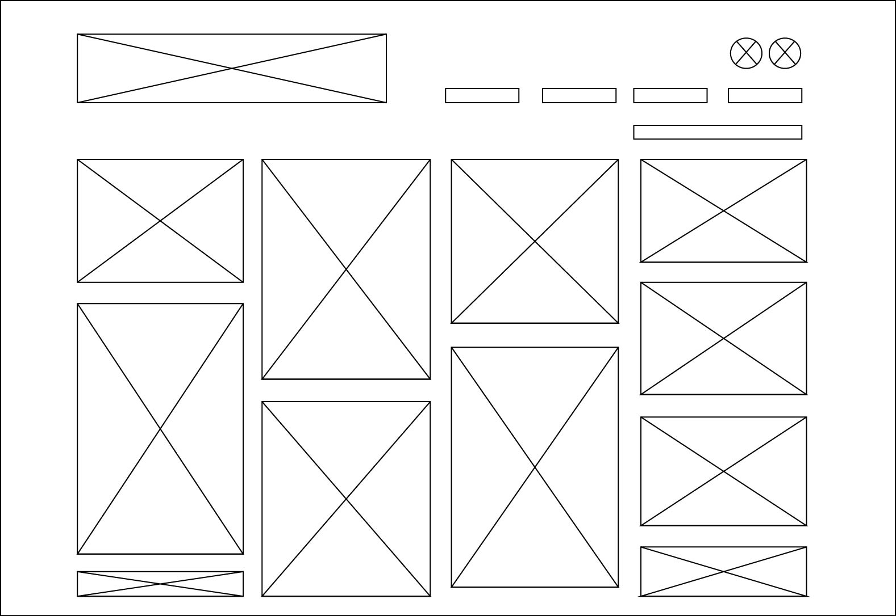
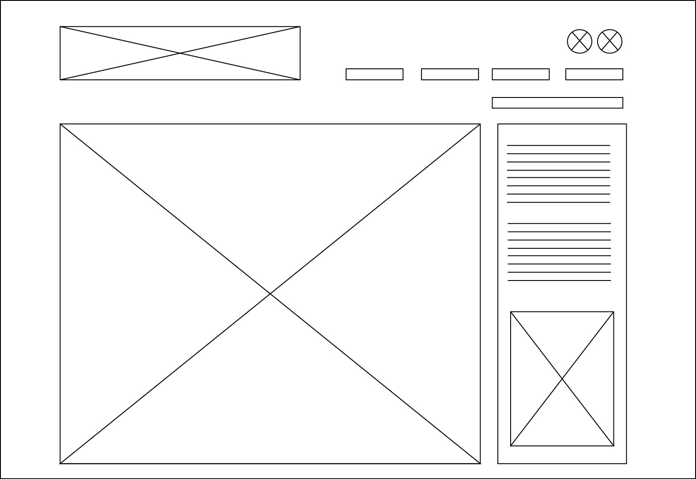
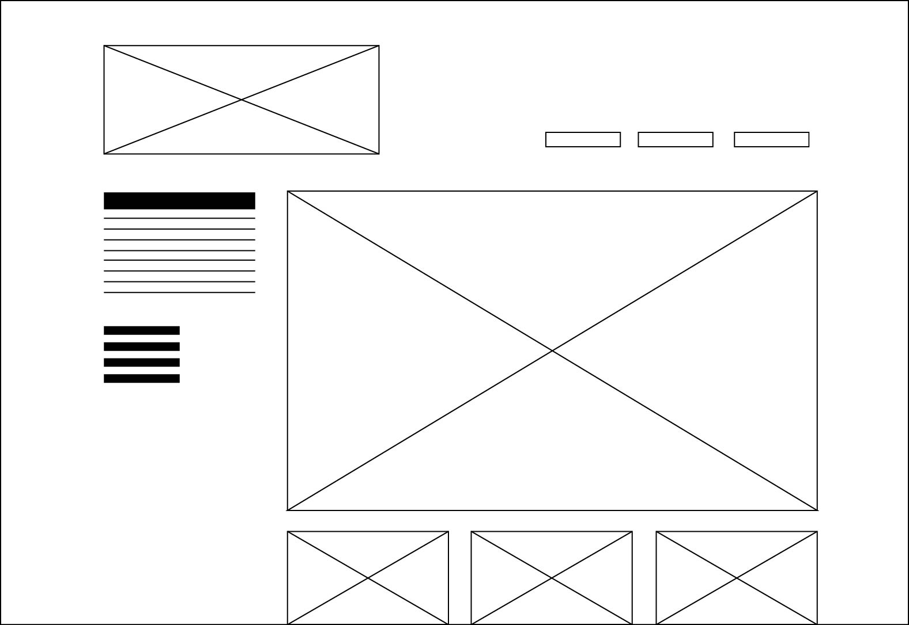
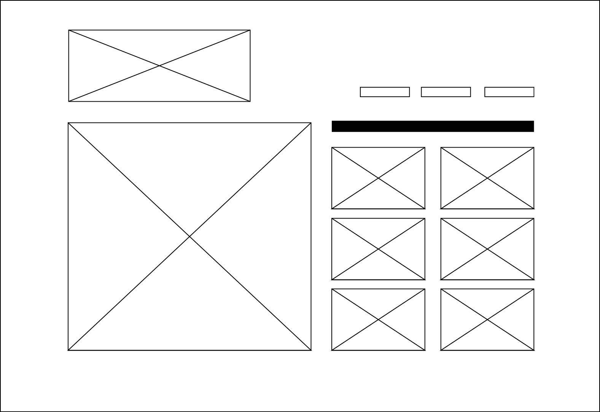

Design Challenge 1
Which two websites are you most inspired by?
Designspiration and FFFFound
How do they exhibit effective use of space, size or balance?
Both of these websites use a lot of white space creating a clean layout making the images the focal point ensuring they stand out straight away.
Designspiration uses the full width of the website compared to FFFFound where majority of the content is to the left which can make it look unbalanced whilst on a desktop computer.
In relation to space, I believe Designspiration uses it well, whereas FFFFound can look lopsided and a bit boring. The lack of CSS and design makes it less appealing.
What makes them similar and different?
The similarities in the two is that they both go by the simple black and white colour scheme and are heavily picture based. Rather than over designing the websites, they allow the artwork to speak for itself.
Their differences lie in the balance of the multiple elements. Designspiration is more clean and sleek with a modern feel whereas FFFFound can feel like you are on a basic HTML site. Whilst Designspration features a higher quantity of images, they utilise the space effectively by keeping a standard width and tight space between each image. Even though the images are different heights, this keeps the website from being too distracting.
Thumbnail Sketches

- Designspiration Sketch 1
For the first Designspiration layout I've shifted the navigation from the left hand side to the top right hand side in line with the logo.
By removing the left navigation and forgoing the fifth column, we can now view the images larger than before while still keeping with the original grid.

- Designspiration Sketch 2
With the second layout for Designspiration, rather than a small pop up window when you select an image, it will now open within the same page keeping the top navigation structure visible.
The image can also be bigger and more room for an explanation on the right hand side.

- FFFFound Sketch 1
For this sketch I have decided to go with central layout utilising more of the page. In my opinion this makes it more visually appealing and less like a HTML website from about 1995...
I've gone with text to the left, and a central image with three smaller images from the same artist below.

- FFFFound Sketch 2
When you select an image to enlarge there is a messy overload of links below that are either suggested images or are the latest posts of similar artists.
The spacing is not consistent and looks disorganised. I have moved the suggested images next to the main image at a limited quantity to keep it clean.